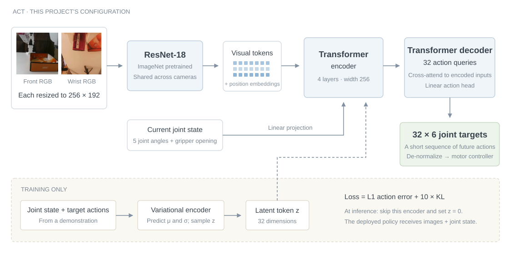
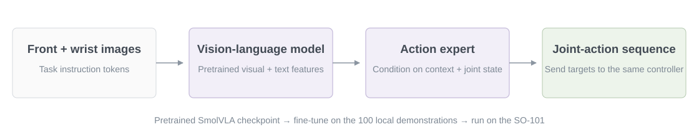

SO-101: Learning to Pick and Place
on a Mac
Independent Robotics Project · 2026
From collecting demonstrations to a real-world pick-and-place.
Why this project?
I’ve always been interested in robots and the idea of them becoming useful in everyday homes. Before studying AI, I tried collecting everyday-scene data for a data company. As I learned computer science and AI, I wanted to build robotics projects myself. After two months of preparation, I started with a small task: picking up a box and putting it in a tray.
Method
1. Hardware & data
- Leader → follower: two SO-101 arms connected to the Mac over USB serial; six motors per arm, with saved joint calibration.
- Two camera views: Logitech C920 at the front, icspring on the wrist. Capture: 640 × 480 at 20 FPS.
- 100 demonstrations: images + joint state + demonstrated action. Split by episode: 80 train / 10 validation / 10 test.
2. ACT [1]: from images to an action sequence
Action Chunking with Transformers · LeRobot implementation

- See: ResNet-18 encodes both RGB views; a linear layer embeds the six-value joint state.
- Predict: the Transformer outputs 32 future actions. Each action has five joint angles and one gripper opening.
- Learn: match demonstrated actions with an L1 loss, plus a KL term for the training-only latent encoder.
3. SmolVLA [2]: adapt a pretrained robot policy

For SmolVLA, I started from a pretrained robot-policy checkpoint and fine-tuned it on my demonstrations. Its vision-language model processes the camera views and task text; the action expert uses that context and the joint state to predict movements.
Recorded run: checkpoint 7,000 · three sampling steps.
4. Run on the Mac
Policy inference runs on PyTorch MPS in a background worker, while a separate motor loop targets 20 Hz. This keeps the arm’s control loop running while the next action sequence is computed.
- ACT execution: request a new chunk every 1.2 seconds; use timestamps to skip actions that elapsed during inference.
- Before each command: de-normalize targets, apply joint-range and speed limits, and check tracking errors and stale predictions.
Real-world Experiment
| Policy | Completed | Completion rate |
|---|---|---|
| ACT [1] | 7 / 10 | 70% |
| SmolVLA [2] | 2 / 10 | 20% |
ACT: 6 autonomous + 1 assisted completion.
Figure 2. Position 12: a complete pick-and-place. Click a frame to jump to that stage in the video.
Selected ACT Demonstrations
Front and wrist footage are time-aligned. Use “Play both” to compare the views.
| Hardware | SO-101 leader & follower; Apple M3 Pro |
|---|---|
| Cameras | Logitech C920 (front); icspring (wrist) |
| Demonstrations | 100 episodes · 20 FPS |
| Dataset split | 80 training / 10 validation / 10 test episodes |
References
- [1]Tony Z. Zhao, Vikash Kumar, Sergey Levine, and Chelsea Finn. Learning Fine-Grained Bimanual Manipulation with Low-Cost Hardware. 2023.
- [2]Mustafa Shukor et al. SmolVLA: A Vision-Language-Action Model for Affordable and Efficient Robotics. 2025.